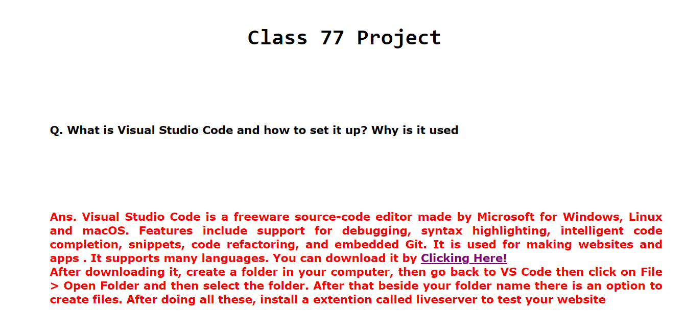
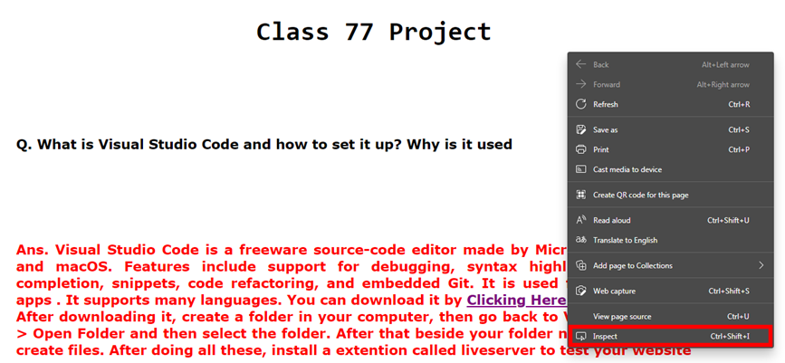
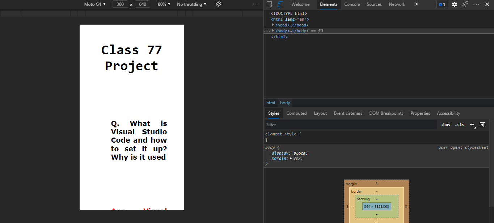
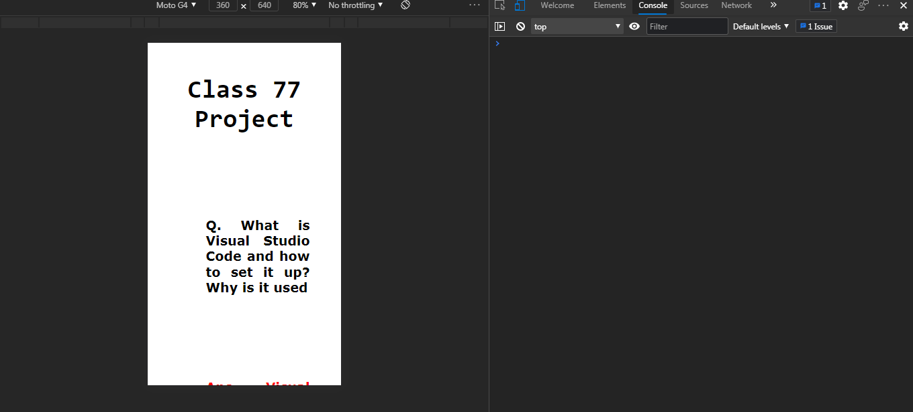

Class 77 Project
Q. What is Visual Studio Code and how to set it up? Why is it used
Ans. Visual Studio Code is a freeware source-code editor made by Microsoft for Windows, Linux and macOS. Features include support for debugging, syntax highlighting, intelligent code completion, snippets, code refactoring, and embedded Git.
It is used for making websites and apps . It supports many languages. You can download it by Clicking Here!
After downloading it, create a folder in your computer, then go back to VS Code then click on File > Open Folder and then select the folder. After that beside your folder name there is an option to create files. After doing all these, install a extention called liveserver to test your website
Q. How to open console (Screenshot attached
Ans.
1.) First open your desired webpage in your browser.

Then right-click in a blank area and click inspect.

3.After clicking inspect a menu will apear like this

Then to open console click on the console option beside the inspect

WHat is console screen, why it is used and how to print anything in it?
Console screen Logs information associated with a web page: network requests, JavaScript, CSS, security errors and warnings as well as error, warning and informational messages explicitly logged by JavaScript code running in the page context. SO what's the use of it? The Console is also a REPL. You can run JavaScript in the Console to interact with the page that you're inspecting. For example, Figure 2 shows the Console next to the DevTools homepage.
To print something in console just insert "console.log(Anything);" in your javascript file :)
Go to console for secrect :D